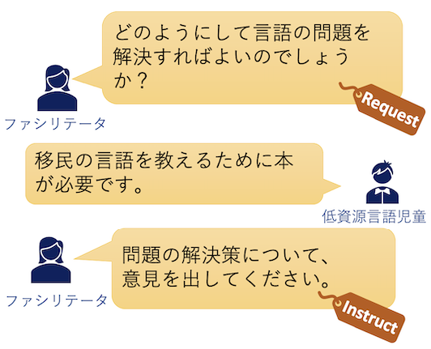

Welcome to my page!
About me
Ritsumeikan University
Information Science and Engineering
Social Intelligence Laboratory DC2
Motozawa Mizuki
Research Theme

SDGsの17の目標の1つに「質の高い教育をみんなに」という目標があり、その中で文化の多様性を尊重する態度が重要であると主張されています。
このような態度を子どものうちから涵養するために、機械翻訳を用いた異文化コラボレーションが行われています。
しかし、このような場では、機械翻訳精度の言語間でのばらつきがあるため、低資源言語と呼ばれる翻訳精度の低い言語を話す子どもは、他言語の子どもと比較して発言が少なくなります。
そこで、このような子どもたちが発言しやすい環境を構築するには、どのようなファシリテータの発話が有効であるかを分析しています。
この分析で得られた知見を、今後のファシリテータエージェントの開発に活用していく予定です。
SDGsの17の目標の1つに「質の高い教育をみんなに」という目標があり、その中で文化の多様性を尊重する態度が重要であると主張されています。
このような態度を子どものうちから涵養するために、機械翻訳を用いた異文化コラボレーションが行われています。
しかし、このような場では、機械翻訳精度の言語間でのばらつきがあるため、低資源言語と呼ばれる翻訳精度の低い言語を話す子どもは、他言語の子どもと比較して発言が少なくなります。
そこで、このような子どもたちが発言しやすい環境を構築するには、どのようなファシリテータの発話が有効であるかを分析しています。
この分析で得られた知見を、今後のファシリテータエージェントの開発に活用していく予定です。
Publication
国際会議論文
国内学会発表
受賞
- 2021年度 情報理工学研究科 優秀研究賞 受賞, "Conversation Analysis for Facilitation in Children’s Intercultural Collaboration"